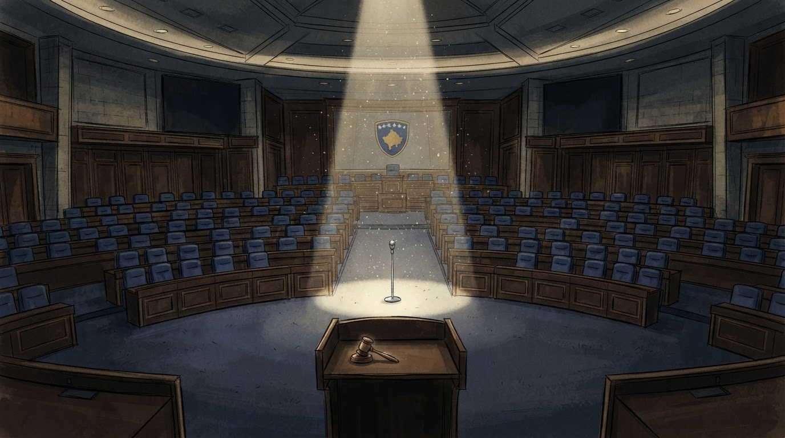
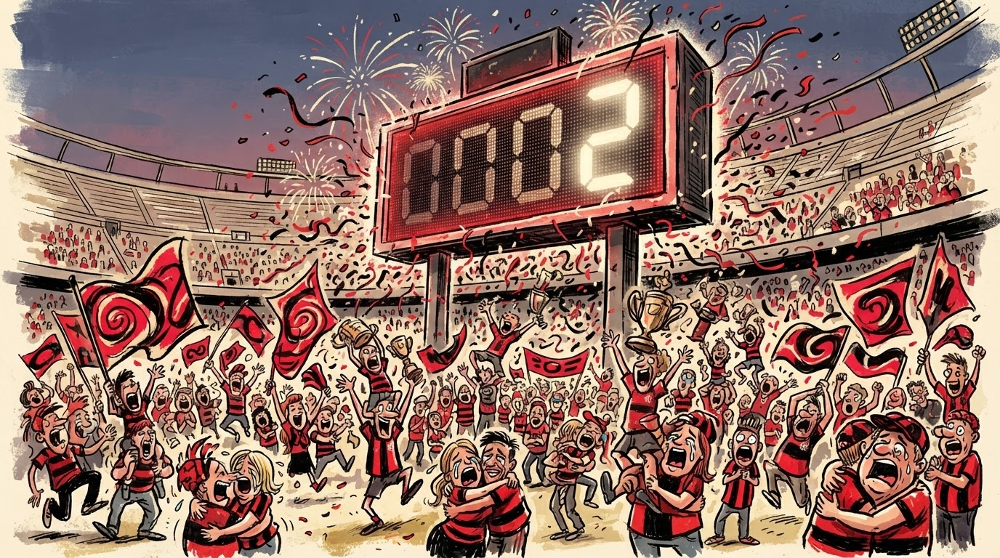

Politikë
Gazeta Satirike e Kosovës dhe Shqipërisë — lajme që nuk duhet t'i besoni, por i lexoni gjithsesi
Një vend më lart, një festë më e madhe: kryeministri i ardhshëm (kushdo qoftë) premton statujë për trajnerin.

Kombëtarja e Kosovës shkroi historinë e re të futbollit ballkanik duke u ngjitur nga vendi 79 në vendin 78 të renditjes botërore të FIFA-s — një hop matematikor që Federata e ka quajtur "përparim epokal".
Menjëherë pas publikimit të renditjes, qeveria (ende në formim, por shpirtërisht e pranishme) shpalli tre ditë festë kombëtare, ndërsa Ministria e Sportit njoftoi ndërtimin e një muzeu të veçantë kushtuar "asaj një pike që na duhej".
"Nga vendi 79 në 78 — kjo nuk është thjesht një numër, kjo është një filozofi. Ne besojmë në përmirësim gradual, edhe kur askush s'e sheh." — trajneri kombëtar, në konferencë të improvizuar mbi një karrige zyre
Sipas ekspertëve tanë sportivë, nëse Kosova vazhdon me këtë ritëm përparimi (1 vend për çdo cikël FIFA), kombëtarja do të arrijë vendin e parë të botës brenda 78 cikleve, ose siç e ka llogaritur redaksia jonë, "pak para se t'i lindin stërnipërit aktualit portier".
Tifozët, të mrekulluar nga kjo arritje, kanë organizuar tashmë karvan festiv nëpër Prishtinë, ndërsa disa prej tyre kanë kërkuar zyrtarisht që data e ngjitjes të shpallet festë kombëtare e përhershme, njësoj si ditët e pavarësisë, vetëm me pak më shumë konfeti.
Federata konfirmoi se objektivi i radhës është "të mos zbresim përsëri në 79", një deklaratë që analistët e kanë quajtur "realiste dhe plot shpresë njëkohësisht".